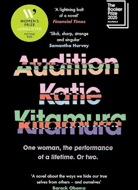

Audition by Katie Kitamura: A Review
A short novel that lives in what it refuses to explain. Three prize nominations and no wins. The case for Audition as the most important short novel of the year.

A woman who has not been named sits down for lunch with a young man in a Manhattan restaurant. He is roughly the age her son would be if she had one. She does not have one. The young man says she is his mother. She tells him this is not possible.
That is the opening of Audition, the fifth novel by Katie Kitamura, published by Fern Press in the UK in April 2025. It runs to 208 pages. It was shortlisted for the 2025 Booker Prize and a finalist for the 2026 Pulitzer Prize for Fiction. It was longlisted for the 2026 Women’s Prize. It won none of them.
This is the most interesting fact about the book and the least interesting thing about reading it. The book itself is one of the most precise novels of the decade so far. It is also, by some distance, the most uncomfortable. I read it across two evenings and I have not stopped thinking about it.
Two narratives that do not agree
The novel is structurally a Möbius strip. The first half is a story. The second half is the same story told again with the variables changed. The young man is still the young man. The actress is still the actress. The lunch still happens. But by the second half he has been working as the assistant director on her play for weeks and she may or may not be married to him and her husband may or may not be a different man.
Kitamura does not tell you which version is true. The book does not tell you that one version is real and the other a rehearsal, or one a memory and the other a performance, or one a fact and the other a fantasy. The two versions sit side by side in the novel like two negatives of the same photograph laid on top of each other. They overlap in some places and not in others. You read the second half trying to work out what the first half meant. You finish the second half and realise you cannot do this without rereading the first half through the lens of the second, which is a different lens depending on which version you have decided to believe.
I have read the book twice now. I still cannot tell you which version is the truth. I have stopped trying.
What the book refuses to explain
The unnamed narrator is an actress. She is in rehearsals for a play called The Opposite Shore. The play is never described in any detail. We do not learn what it is about, what kind of role she is playing, or what the director wants from her. We are told only that she finds the role difficult. The opacity is deliberate. Kitamura is not interested in giving us the play. She is interested in giving us the rehearsal of being a person who plays a role.
The actress’s husband is named Tomas. We are told almost nothing about him. He appears, he leaves, he reappears in the second half as possibly a different version of himself. He has an inner life the book does not give us access to. He behaves consistently within each version but the two versions of him do not behave consistently with each other.
Xavier, the young man, is described physically. We are told he is attractive, troubling, young enough to be the actress’s son. We are told what he wears. We are not told what he wants. Each version of the book gives us a different account of who he is and what he has come to her for. Neither account is settled by the end.
This is the Kitamura method. She has been refining it across four previous novels, most visibly in A Separation and Intimacies. The narrator narrates. The world is described in clean expensive prose. The thing that would explain the narration is held back. The reader fills in the gap with their own assumptions and then has those assumptions tested by what the narrator says or fails to say next.
I have been writing about this all year, about the way the minimalist tradition uses what it omits as a structural force. Carver did it with grief and Hempel did it with mortality. Kitamura is doing it with identity. The space the book refuses to fill is the space in which the reader’s own assumptions about who they themselves are have to live.
The mid-novel pivot is the risk
A novel built on a structural pivot stands or falls on whether the pivot earns its place. Many novels with a major mid-book twist fail because the twist is doing the work the writing should have been doing. The book before the twist was insufficient; the twist is the writer’s apology for that.
Kitamura’s pivot is not an apology. It is the argument. The first half of the book reads as one kind of literary novel: a quiet psychological story about an older woman, a younger man, a marriage, and the doubt that one introduces into the other. The second half reads as a different kind of literary novel: a story about a family, a fragile peace, and the way an outsider can disrupt it. Both halves are entirely plausible. Both halves are entirely incompatible. The pivot does not resolve them. It refuses to resolve them. The refusal is the point.
This is the move that lost the book the Pulitzer. It is also the move that earned the book the Booker shortlist, the Pulitzer shortlist, and the Women’s Prize longlist. The 2026 Pulitzer went to Daniel Kraus’s Angel Down, a single-sentence novel about the First World War. Both books are structural experiments. Both books refuse the conventions of the realist novel. The difference is that Angel Down refuses through formal commitment to a single unbroken voice, and Audition refuses through a Möbius structure that doubles the voice against itself.
I think Audition is the more ambitious book. It is also the more uncomfortable. Prize juries respond to ambition, but they reward comfort.
The actress is a figure for the reader
The novel’s most generous reading is that the actress is the reader. Both spend the book auditioning. Both spend the book trying to work out who is performing and who is genuine and where the line is between the role and the person playing it. By the end neither has settled it.
The first version of the story is the version the actress wants to be true: she is in control, the young man is a stranger making a mistake, her marriage is stable. The second version is the version her own work as an actress has prepared her to inhabit: she is playing a role, the young man might be hers, the marriage might be a performance she has been giving for years.
We do not know which is true because she does not know either. The book is built on the experience of a person being unable to tell the difference between their own life and a story they have been telling themselves about their life. It is not a thriller. There is no reveal. The discomfort is the work.
Why the book didn’t win the prizes
It is short and cold. It is also unwilling to flatter the reader. The prose is so controlled that some readers experience it as airless. The structural pivot frustrates the desire for resolution that most novels train readers to expect. The book is also not about a clearly identifiable social subject, in a literary moment where most prize-decorated novels are about something that can be named in a sentence.
The 2026 Women’s Prize went to Wendy Erskine’s The Benefactors. I predicted this in April and I am glad of the result. Erskine is a writer working in the short-story-to-novel tradition that I think is doing the most important work in British and Irish fiction right now. The Women’s Prize has a thirty-year history of crowning the book the wider conversation has not yet caught up with. The Benefactors is that book this year.
But Audition should have won something. The Booker went elsewhere and the Pulitzer went to Kraus. The Women’s Prize chose Erskine. The pattern of near-misses is not because the book is not strong enough. It is because the book is too uncomfortable in a way that does not have an easily-named subject to recommend it. Prize cultures need a peg. Audition refuses to give them one. The refusal is what makes it the book.
What the book is for
This is a book about the cost of performing. It is also a book about the cost of refusing to perform, which the actress eventually attempts and which the book refuses to grant her. It is a book that takes seriously the possibility that we cannot stop performing even when we try, because the trying is itself the performance.
If you have read Kitamura before, this is her best book. If you have not, start with A Separation and work forward. Audition assumes you can carry the weight of what it does not explain. A Separation trained that capacity in its readers. Intimacies tested it. Audition asks you to use it.
If you do not read literary fiction often and you are looking for an entry point, this is not the book. Start with Wendy Erskine’s The Benefactors or with Douglas Stuart’s John of John. Both are doing related compression work in less austere prose.
If you write fiction, especially if you write short fiction, you should read Audition. It is the most rigorous novel-length argument for compression I have read in years. It is also a master class in what to leave out.
Audition by Katie Kitamura. Fern Press, Penguin Random House UK, 15 April 2025. 208 pages. £16.99.
Buy Audition from Bookshop UK. Every copy bought through this link supports independent UK bookshops and earns Tumbleweed Words a small affiliate commission.
Save for later →Flash fiction and prose poetry in the tradition of what you just read. Written on the road. Over 1,200 readers. Free.
Read and subscribe →4.5 out of 5. Loses half a star for one thing only: the second half loses tension at one specific point about three-quarters through and the prose, briefly, falters. You will not notice it on the first read. You will notice it on the second.
David Moran is a writer and editor based in Edinburgh. Find more reviews of contemporary literary fiction at Tumbleweed Words, or subscribe to the newsletter.